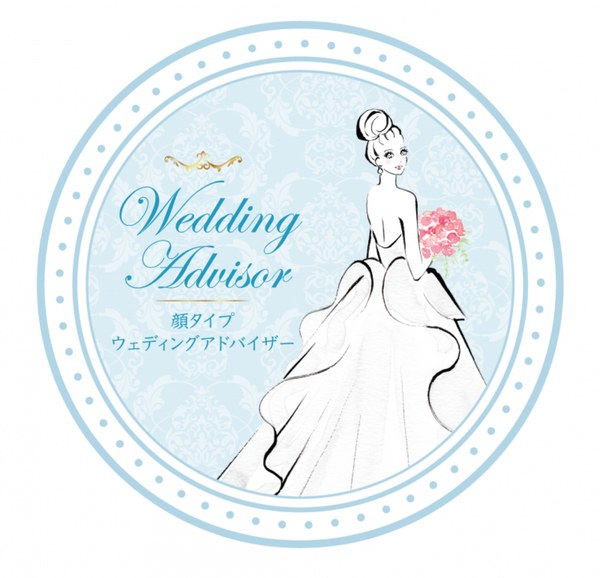

ドレスショップに並ぶ何十着ものドレス。どれも素敵に見えて、でも「本当に似合っているのはどれ？」——迷ってしまう花嫁さまは、とても多いです。
顔タイプウェディングアドバイザーとして、あなたのお顔立ちから、いちばん輝いて見えるドレスのテイストをお伝えします。
でも、似合うだけが正解ではありません。ずっと憧れていたドレスがあるなら、その「好き」も大切にしたい。Micolissがご一緒するのは、「似合う」と「好き」が、ちゃんと重なる一着を見つける時間です。
最高の日を、自分史上最高に美しい姿で。前撮りや式当日に向けて、目的に合わせて選べる3つのコースをご用意しています。

顔タイプウェディングアドバイザーによる、花嫁さまのための診断です。
一生に一度の日だからこそ、「なんとなく可愛いから」で選んで後悔してほしくない——そう思っています。日本顔タイプ診断協会の顔タイプウェディングアドバイザーを取得し、新潟で約10年・延べ5,000名以上を診断してきた経験をもとに、あなたに本当に似合う一着を一緒に見つけます。
いつ受けるのがおすすめ？
ドレス選びの前です。
ドレスショップには何十着ものドレスが並んでいます。どれも素敵に見えて、「本当に似合っているのはどれ？」と迷ってしまう花嫁さまは、とても多いです。
似合うドレスがわかってから試着に行くと、迷う時間がぐっと減ります。写真は一生残ります。「あのとき、もっと似合うものがあったかも」と後から思ってほしくないので、ドレスを選ぶ前に、あなたに似合う色・形・テイストをはっきりさせておきましょう。
3つのコース、どれを選べばいい？
◆ はじめての方・診断を受けたことがない方 → ①ブライダルトータルコース（¥38,500・180分）。色・骨格・顔タイプを全部まとめて。オリジナルコラージュ付きです。
◆ すでにMicolissでパーソナルカラー診断・骨格診断を受けている方 → ②顔タイプブライダル診断（¥16,500・90分）。すでにあるデータに、ブライダル向けの顔タイプ・柄ドレープを足します。
◆ ドレスの試着に、一緒に来てほしい方 → ③ドレスショップ同行（¥16,500・60分）。①か②の診断を受けていただいた方のためのメニューです。診断結果をもとにお選びしていきます。
① ブライダルトータルコース
- 料金
- ¥38,500（税込）
- 所要時間
- 約180分
花嫁さまのための、まるごと特別フル診断。次の内容がすべて含まれます。
- パーソナルカラー診断（基本32色＋トーン別120色）
- 骨格診断（3タイプ）
- ブライダル顔タイプ診断（8タイプ）／後日、あなただけのオリジナルコラージュ付
- トータルアドバイス
前撮りや式当日を「自分史上最高に美しい姿」で迎えるための特別コース。一生に一度の準備に、丁寧に寄り添います。
◆ オリジナルコラージュとは 診断の結果をもとに、あなたに似合うアイテムを一枚の画像にまとめて、後日データでお渡しします。
「エレガントタイプなので、こういうドレスが似合いますよ」——そう聞いても、いざドレスショップに立つと思い出せないものです。画像が手元にあれば、スマホを見せながら「こういうものを探しています」と伝えられます。ドレス選びでも、ヘアメイクの打ち合わせでも、そのまま使っていただけます。
② 顔タイプブライダル診断（柄ドレープ診断付）
- 料金
- ¥16,500（税込）
- 所要時間
- 約90分
ご予約の際に、以前ご来店いただいたおおよその時期（年・月）をお知らせいただけますと、当日スムーズにご案内できます。お控えがなくても大丈夫ですので、覚えている範囲でお気軽にお知らせください。
花嫁さまの魅力が最も輝くように、顔タイプ・柄ドレープを使って、ドレス・アクセサリー・ヘアメイクをトータルアドバイス。「これだ！」と思える一着が選びやすくなります。前撮り・式準備をもっと楽しみたい方へ。
③ ドレスショップ同行
- 料金
- ¥16,500（税込）
- 所要時間
- 約60分
ドレスショップでの試着に同行します。試着時の印象チェック、写真を撮るときの角度や立ち方をアドバイス。その場での候補整理に加えて、後日、試着写真を見ながらのアフターフォローも含まれます。「その場で決めきれなかった」「家に帰ってから迷ってしまった」——そんな時も大丈夫です。
◆ ご利用の条件 Micolissで診断を受けていただいた方のためのメニューです。診断結果をもとにお選びしていくので、まずは①または②の診断からお願いしています。
◆ お店はどこへ？ お客様がお決めになったドレスショップへご一緒します。お店によっては外部からの同行をお受けいただけない場合もありますので、ご予約前に一度、お店へご確認いただけますとスムーズです。
◆ 後日のアフターフォローとは 試着の後日、お撮りになった試着写真をLINEでお送りください。写真を見ながら、あらためてアドバイスいたします。その場では決めきれなくても大丈夫。お家でゆっくり考えてから、ご相談いただけます。
診断のあと、こんな変化があります
ご利用いただいた花嫁さまからは、こんな声をよくいただきます。
- 迷わず決められた。ドレスショップで悩む時間が、驚くほど短くなった
- 前撮りの写真を見て、「これが私で良かった」と思えた
- ドレスだけでなく、小物やヘアメイクまで迷わなくなった
よくある質問
Qいつ受けるのがおすすめですか？⌄
Qドレスはもう決まっているのですが、受ける意味はありますか？⌄
Q母や参列者も受けられますか？⌄
Q診断結果は後から見返せますか？⌄
アクセス
新潟市西区小新西のプライベートサロンです。小針駅から車で約8分、バス停「工業高校入り口」の目の前、赤い壁の建物・駐車場ありが目印。新潟市内はもちろん、県内各地からお越しいただいています。
個性の種を大切に、色とともに、
あなたらしい輝きと幸せへ。